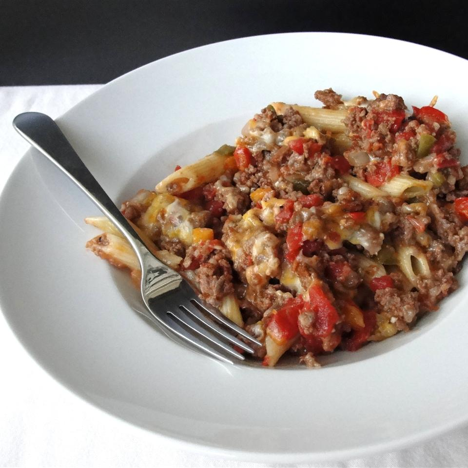

Johnny Marzetti Casserole
Kids love this buffet-ready casserole dish. My mother-in-law used to make a simpler version of this for my husband when he was growing up. This version pushes the flavor profile a bit. I prefer to have this dish sit overnight before baking as the flavors improve and the pasta absorbs some of the sauce so the consistency is just right.

Ingredients
- 8 ounces rotini pasta
- 1 pound ground beef
- ½ pound bulk mild Italian sausage
- ¾ cup chopped onion
- ¼ cup chopped celery
- 1 clove garlic, minced
- 1 tablespoon minced green bell pepper
- salt and pepper to taste
- 1 (14.4 ounce) can diced tomatoes
- 1 (15 ounce) can tomato sauce
- 2 cups shredded Italian cheese blend
- 1 ½ cups shredded sharp Cheddar cheese
Directions
- Preheat oven to 350 degrees F (175 degrees C).
- Bring a large pot of lightly salted water to a boil. Add pasta and cook until just al dente, 6 to 8 minutes; drain. Run cold water over the pasta to stop pasta from cooking further. Set aside.
- Meanwhile, cook the ground beef and sausage until completely browned and crumbled, 7 to 10 minutes. Mix in the onion, celery, garlic, and pepper; continue to cook and stir another 5 minutes. Season with salt and pepper. Remove from heat and stir in tomatoes and tomato sauce. Allow to cool five minutes.
- Lightly grease a large casserole dish. Spread the pasta over the bottom of the dish. Sprinkle the Italian cheese blend over the pasta. Pour the meat mixture over the pasta and cheese. Cover dish with heavy aluminum foil. Bake in preheated oven for 45 minutes; remove foil and sprinkle Cheddar cheese evenly over the casserole. Continue baking until Cheddar cheese has melted, about 5 minutes. Rest for 10 minutes before serving.